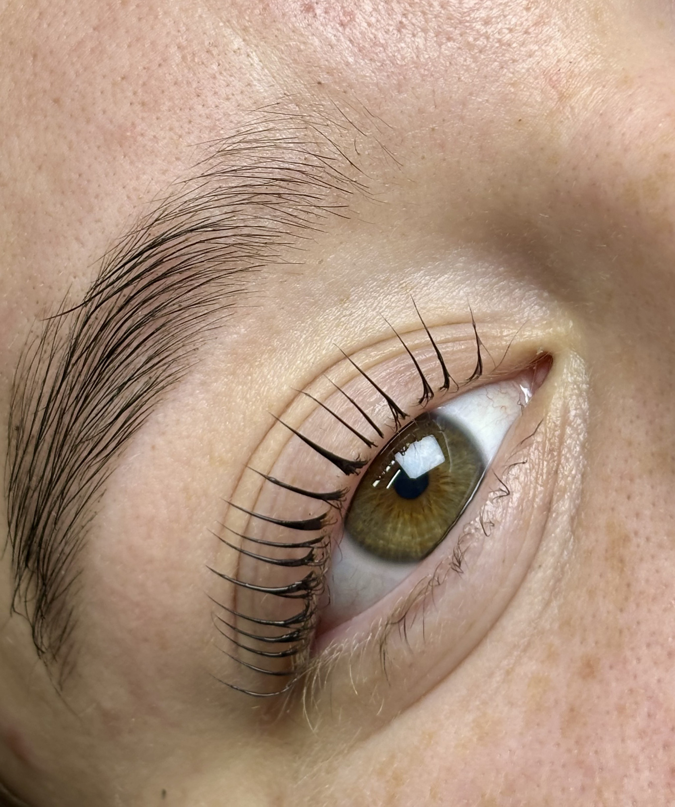

Cílios
Do natural curvado ao alongado.
Lash Lifting tradicional
Curva e realça os seus próprios cílios, sem colocar fios.
Pra quem quer um olhar mais aberto mantendo o efeito natural.
Lash Lifting coreano
Uma versão do lifting pensada pra realçar a beleza natural dos cílios.
Pra quem gosta de delicadeza e quer só o que já é seu, mais evidente.
Extensão de cílios
Fios aplicados sobre os cílios naturais pra dar comprimento e presença.
Pra quem quer um resultado mais marcante no dia a dia.